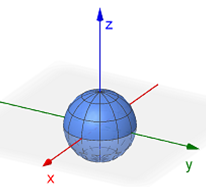

Spherical
The spherical coordinate system is a bit different. We will still use \(\theta\) to represent the rotation from the positive \(x\)-axis, but we will now use \(\phi\) (phi) to represent the rotation from the positive \(z\)-axis and \(\rho\) (rho) to represent the 3D radial distance from the origin.
The following GeoGebra applet will help illustrate how a point in space can be represented using the rectangular (Cartesian), cylindrical, and spherical coordinate systems. You may click-and-drag to rotate the view around the origin.
- Use the orange (x, y) on the xy-plane to change the position of the blue point on the 3D axes. Quickly use the graph to review how the rectangular and cylindrical coordinate systems represent a point in space.
- Uncheck the Rectangular and Cylindrical boxes, and check the Spherical box.
- Use the orange point and slider again to change the position of the blue point on the 3D axes. The coordinates of the point again appear in the top corner, this time in the form (ρ, φ, θ).
Observations:
- The rectangular coordinate system uses perpendicular distances to represent the location of a point in space.
- The cylindrical coordinate system uses polar coordinates in the \(xy\)-plane plus the \(z\)-value to represent the location of a point in space.
- In spherical coordinates, \(\rho\) represents the direct slanted distance from the origin to the point. We usually assume \(\rho \ge 0\).
- In spherical coordinates, \(\phi\) represents the angle between the point and the positive \(z\)-axis: where \(\phi=0\) is the positive \(z\)-axis, \(\phi=\pi/2\) is the \(xy\)-plane, and \(\phi=\pi\) is the negative \(z\)-axis. We usually assume \(0\le\rho\le\pi\).
- In spherical coordinates, just like in polar or cylindrical, \(\theta\) represents the angle of rotation from the positive \(x\)-axis. We usually assume \(0\le\theta\lt 2\pi\).
Here are some common graphs in spherical coordinates that we will encounter.
| Equation | Graph |
|---|---|
| Sphere at \((0,0,0)\) \(\rho=a\) \((a \gt 0)\) |
 |
| Sphere at \((0,0,a)\) \(\rho=2a\cos(\phi)\) \((a \gt 0,\, 0 \le \phi \le \pi/2)\) |
|
| Cylinder \(\rho=a\csc(\phi)\) \((a \gt 0,\, 0 \lt \phi \lt \pi)\) |
 |
| Cone \(\phi=a\) \((a \ne 0, \pi/2, \pi)\) |
 |
| Horizontal Plane \(\rho=a \sec(\phi)\) \((0 \le \phi \lt \pi/2)\) |
 |
| Vertical Half Plane \(\theta=a\) |
 |
Converting Equations
There are four equations that we may need in order to convert equations between the rectangular and spherical coordinate systems.
The following videos give a few examples demonstrating how to convert equations between rectangular and cylindrical coordinates.
Triple Integrals
Given a continuous function \(f(x,y,z)\) through a solid \(E\) that can be expressed using spherical coordinates, the triple integral of \(f\) over \(E\) can be computed using the follow formula, where \(g_1(\phi,\theta) \le \rho \le g_2(\phi,\theta)\), \(c \le \phi \le d\), and \(\alpha \le \theta \le \beta\).
\[\underset{E}{\mathop \iiint} \,f(x,y,z)~dV=\int_{\alpha}^{\beta}\int_{c}^{d}\int_{g_1(\phi,\theta)}^{g_2(\phi,\theta)}\,f(\rho \sin(\phi) \cos(\theta),\rho \sin(\phi) \sin(\theta),\rho \cos(\phi))\,\rho^2 \sin(\phi)~d\rho~d\phi~d\theta\]